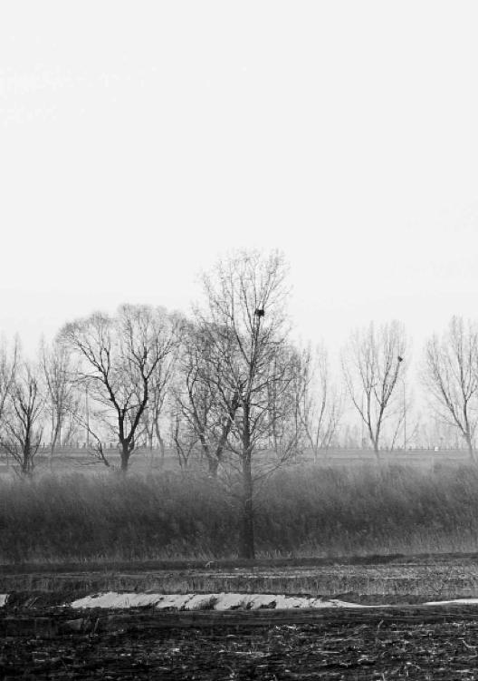

才能招来“外贼”
千万不能小看风对人身心的影响
“八风发邪，以为经风，触五臟，邪气发病”
经文：
“黄帝问曰：天有八风，经有五风，何谓？歧伯对曰：八风发邪，以为经风，触五臟，邪气发病。”
千万不能小看风对人身心的影响
大自然有八种风
梁冬：黄帝问曰：天有八风，经有五风，何谓？
徐文兵：在《上古天真论》里，讲完了真人、至人以后，我们说到了圣人——其次有圣人者。“处天地之和，从八风之理。”这说明《黄帝内经》是一脉相承的。
在《四气调神大论》里，一开始黄帝说:“余闻上古之人，春秋皆度百岁”，岐伯说:“上古之人，其知道者，法于阴阳，和于术数”，然后告诉我们怎么法于阴阳。这其实是在延长、延伸《上古天真论》的一句话。所以说，古人微言大义，说一句话，后面跟着好几篇文章都在解释。
“金匮真言论”第一段就讲什么叫八风,八风是怎样影响人的身体，怎么影响人的臟腑、气血变化，会导致什么病，会让人怎么不舒服，然后怎么去调治。这就是在解释古代圣人是怎么从八风之理的。
梁冬：八风就是从东、南、西、北以及它们的夹角——东南、西南、西北、东北八个方向吹来的风。
八风就是从东、南、西、北以及它们的夹角——东南、西南、西北、东北八个方向吹来的风。
从不同方向吹来的风，给人的能量都不一样
徐文兵：从不同方向吹来的风，带的能量就不一样。东风给人的感觉是生发的。吹面不寒杨柳风；东风吹，战鼓擂。
从不同方向吹来的风，带的能量就不一样。
梁冬：这个世界谁怕谁；敌人是弹簧，你弱它就强。
徐文兵：东风给人的感觉是什么？温暖的、鼓舞的、生发的。那么西风呢，什么感觉？
东风给人的感觉是什么？温暖的、鼓舞的、生发的。那么西风呢，什么感觉？凛冽、肃杀。
梁冬：凛冽、肃杀。
徐文兵：红军长征渡湘江的时候，力量损失了大半——从八万人锐减为三万多人。遵义会议后，毛主席写了一首《忆秦娥·娄山关》，第一句：“西风烈，长空雁叫霜晨月。”西风带着霜来了，晚上一只孤雁在飞。下边呢：“马蹄声碎，喇叭声咽。雄关漫道真如铁，而今迈步从头越。从头越，苍山如海，残阳如血。”看看，在西风这个状态下是什么感觉？
毛主席那么豪情万丈的人，也遭受这么大的挫折——尽管他重新进入了军事三人组，成为长征的军事协助者，但是仍感觉到压力。当时惨烈的状态可想而知。为什么西风烈，因为当时正处于深秋和初冬时节。
但大军翻过六盘山以后，毛主席马上写下了：“六盘山上高峰，红旗漫卷西风，今日长缨在手，何时缚住苍龙。”在中医里，西风属于金，属于肺,克的是谁？
梁冬：克的是木，木是东风吧？
徐文兵：木是肝，代表动物是东方苍龙。当时毛主席在哈达铺发现了一张报纸，上面说陕北有红军在活动，他就翻过六盘山直奔陕北，到了西北扎下根。他说一张报纸救了红军。当时，他处于西北角，要借着西风和北风的力量横扫东南，要把苍龙缚住。借西风就是借肃杀之气，可谓大气魄、大手笔！
为什么盛世王朝全都是从东北或西北方打下来的
梁冬：经过对中国历史的研究，我发现盛世的王朝全都是从东北或者西北打下来的。北伐战争很少成功，为什么？
我发现盛世的王朝全都是从东北或者西北打下来的。北伐战争很少成功，为什么？
徐文兵：原因就是它从下往上打。从北京往南走叫南下，乾隆七下江南；从南方往北方走叫北上。所有地势都是这样。
梁冬：北风什么感觉？
徐文兵：北风吹，雪花飘。北风一来，就是寒流来了。我们一说西伯利亚寒流从北边直扑过来，就是那种冰冷的感觉。我有一段时间研究汉赋，研究那些淫词艳曲以后觉得没劲，想来点苍凉大漠的那种气概，想玩点深的。结果，我发现气候环境给作者带来的影响很深。
我们都知道曹操的儿子——曹植七步成诗。曹植的哥哥——曹丕也是一位诗人，他篡汉后当了皇帝，写过一首特别苍凉的诗：“漫漫秋夜长，烈烈北风凉。辗转不能寐，披衣起彷徨。彷徨忽已久，白露沾我裳。”描写一个秋夜，有人睡不着觉，辗转不能寐，然后起来踱步，还是在屋外。然后白露——凉的露水沾在他身上。北风给人的就是这种苍凉的感觉。
八风对人有什么影响，我们已经知道了。当西风兴起的时候，就会有东风起来压倒西风，就是生长之气一定会压倒肃杀之气。当南风吹来的时候，热气会起来，把北风的凉气压掉。
当西风兴起的时候，就会有东风起来压倒西风，就是生长之气一定会压倒肃杀之气。当南风吹来的时候，热气会起来，把北风的凉气压掉。
经过对风的归类观察，古人又进一步分析它对人臟腑的影响。比如，东风起来的时候，会让人的肝胆之气变旺，再推论一下，肝胆克谁呢？木克土，木代表肝胆，土代表脾胃。肝胆旺会让你的脾胃变弱。这就是古人观察天地之间的变化和联系以后道出的真言。
梁冬：那可不可以这么说，上海人得胃炎的概率比西安人要高？
徐文兵：这就要看什么季节了。你说的其实是地域对人的影响。
梁冬：刮什么风实际上是代表某个季节来了。比如说夏天，本来应该刮东南风或者南风，但这时候刮了北风，那是不是也带有北风的能量呢？
徐文兵：对。所以，大家不要认为夏天人就不会受凉，冬天人就不会中暑。不合时令的那种风，我们把它叫作“贼风”——虚邪贼风。虚邪是肉眼看不到的，比如甲H1N1型病毒，肉眼看不到，用显微镜或者电子显微镜能看到。但是眼见为实，眼不见为虚，所以这种病毒叫虚邪。古人讲“虚邪贼风，避之有时”，就是告诉我们，要把病人隔离，不要到人多的地方。
大家不要认为夏天人就不会受凉，冬天人就不会中暑。不合时令的那种风，我们把它叫作“贼风”——虚邪贼风。
梁冬：前边讲到四种风对人的影响。那么，夹角的风，比如说东南风、西北风，也有讲究吗？
徐文兵：有。比如火烧赤壁就是借助了东南风。曹操雄才大略，是大政治家、大军事家。曾有人提醒他说：“对方用火攻怎么办？”曹操不当回事儿，因为他心里有谱儿：大冬天的，寒冬腊月怎么会有东南风？对方要烧我，会先烧到自己。他对大势有判断，但是他忘了，大趋势下会有小的变动。结果在冬至那天，阳升，就一小会儿，便萌动了一股东南风，周瑜和诸葛亮抓住了时机，一下把曹操的战船烧掉了。
梁冬：火烧赤壁那天是冬至吗？
徐文兵：是冬至那天的丑时——阳气突然生发，风向就变了。可见，古代的军事家都是上知天文、下知地理的。
外面气候有变，人体内也会“同气相求”
梁冬：“天有八风，经有五风”，什么叫“五风”啊？
徐文兵：当外面的气的变化影响到人身体内五臟气机的变化时，就会起内风。正常的人是什么状态？不管风吹浪打，我自岿然不动，或者胜似闲庭信步——外面气候的变化不会对我有任何影响。我们身体有个小气候，内环境是恒温的，不能外面热你也热，外面凉你也凉。如何调节这个小气候呢？靠的是自身阴阳平衡。
当外面的气的变化影响到人身体内五臟气机的变化时，就会起内风。
心是火，肾是水，正常的人冷的时候心火会旺点儿，保持体温；热的时候肾水会多一些，让体温降下来。不正常的人是什么状态？外面一有风吹草动，里面就有呼应。
不正常的人是什么状态？外面一有风吹草动，里面就有呼应。
梁冬：一到什么时候关节就疼，是吧？
徐文兵：关节一疼，便知道要变天，明天要下雨、明天要刮风，为什么？
梁冬：这是特异功能？
徐文兵：这叫病态的特异功能。甚至，当人心气内洞的时候，能听到很远处的人说话。
有一位病人对我说：“徐大夫你不是在说我吧？”
我问他：“我说你什么啦？”
他说：“我烦得睡不着觉的时候，我闺女在另一个屋里小声聊天，我听得一清二楚，都进入我的脑仁里面了。”
他的形容特地道，出神了！当人的身体受了贼风以后，外面有点儿风吹草动，便同气相求，开始和谐共振。常言说，家里有内鬼，才能招来外贼。
梁冬： 深刻！
徐文兵：五风就是说外面的气候变化会触动人五臟气机变强或者变弱，然后产生一种不正常的气的流动，我们姑且称之为“内风”。
所谓的内风，实际上是外风引起来的、触动的。如果你不受它的触动，就是健康人。
所谓的内风，实际上是外风引起来的、触动的。如果你不受它的触动，就是健康人。
如果天气的变化让你的心情都变了，说明你病得不轻
徐文兵：健康人都是不受外风触动的人。正如范仲淹的《岳阳楼记》里所写，健康人“不以物喜，不以己悲”。
健康人都是不受外风触动的人。正如范仲淹的《岳阳楼记》里所写，健康人“不以物喜，不以己悲”。
不健康的人是什么样儿？“至若春和景明”，看到春天那种美好的气象时：“登斯楼也，洋洋洒洒，把酒临风”——心情特别好。“若夫淫雨霏霏，连月不开”，或者到那种“樯倾楫摧、浊浪排空”的时候：“登斯楼也，则有去国怀乡，忧谗畏讥，感极而悲者矣。”天气的变化居然让你的心情都变了，这说明什么？说明你病得不轻。
梁冬：所以，那些很敏感的人其实是病态的。
徐文兵：真正修炼得道的人心门打开的时候，可以出神，一看外面不对劲，便“叭”地收回来了，收放自如。而那种极其敏感的人则是神放出以后，老是收不回来。
真正修炼得道的人心门打开的时候，可以出神，一看外面不对劲，便“叭”地收回来了，收放自如。而那种极其敏感的人则是神放出以后，老是收不回来。
梁冬：我经历过一件事。郭生白老先生曾经给我开了一些药，他说，你吃了这个药之后晚上会睡得好。有天晚上我没有按时睡觉，去吃宵夜，结果呢，到11点钟的时候，明显感觉到自己“啪嗒”一下，心神关了——人还睁着眼睛，其实已经睡着了。
徐文兵：那就是神儿已经收回去了，我们管这个叫神机。大家都知道契机、病机、神机，但什么叫“机”呀？简单地说，就是我们打手枪的“扳机”，“啪”一扣，子弹出去了。
每种风的名字都大有深意
徐文兵：在《灵柩》中，有一篇专门详细地论述了“八风”，篇名叫《九宫八风》。里面说到了：不但各种风带来的信息和能量不同，而且古人还给每种风都起了一个形象的名字。
梁冬：还给风起名？
徐文兵：对。风从南方来，名曰“大弱风”；风从西南方来，名曰“谋风”，谋士的“谋”、参谋的“谋”；风从西方来，名曰“刚风”，就是“刚强者死之徒，柔弱者生之徒”的“刚”。
南方来的风叫“大弱风”，西方来的风叫“刚风”，哪个主生，哪个主死？婴儿的身体是很弱、很柔、有弹性的，人死了，才会刚了、硬了。
南方来的风叫“大弱风”，西方来的风叫“刚风”，哪个主生，哪个主死？婴儿的身体是很弱、很柔、有弹性的，人死了，才会刚了、硬了，所以，我反对儒家的一句话 “壁立千仞，无欲则刚”。
梁冬：很多很刚烈的人其实很可怜。
徐文兵：他们很扭曲、很拧巴。有一些病人心如铁石，经络不通，肌肉都变成那种坚硬的“死肉”了。
我看到一个报道，澳大利亚流行一种暴力按摩。当地的一些年轻人，肌肉硬得跟石头一样，给这种人用柔劲、滚法、按法、推法、拿法都不起作用。这帮年轻人都爱喝碳酸冰镇饮料，然后再去着风、吹冷空调，最后把自己的肌肉闹成死肉。帮他们按摩，他们没感觉，必须用暴力才能触动他们。
风从西北方来，叫“折风”；风从北方来，叫“大刚风”；风从东北方来，叫“凶风”；风从东方来，叫“婴儿风”；风从东南方就来叫“弱风”。
再给大家接着说，风从西北方来，叫“折风”——“折杀我也”，打折的“折”；风从北方来，叫“大刚风”；风从东北方来，叫“凶风”——凶吉的“凶”；风从东方来，叫“婴儿风”——这就开始有生了；上面说风从南方来，叫“大弱风”，那么风从东南方来叫“弱风”。
每种风的名字都包含了道家赋予它的含义，从名字就知道每种风的性质。
每种风的名字都包含了道家赋予它的含义，从名字就知道每种风的性质。
风有时候比细菌病毒更细微
徐文兵：岐伯曰：“八风发邪，以为经风”。八风如果侵入人的身体以后，就会触及人五臟经络的气机，产生一种不正常的流动。这就引起 “内风”了。中医把内风定为“六淫之首”——这个“淫”在古代是指“过分”的意思。
梁冬：对，淫雨霏霏。
徐文兵：“风为百病之长（zhang）”。风，先把人的门户打开一条缝，然后那些湿邪、燥邪、暑邪、寒邪，就跟着进来了。所以，风是打开我们门户的第一个邪气。
为什么“风为百病之长（zhang）”。
梁冬：人们能感到被风吹了一下，却想不到风会对我们的内臟产生影响。风真的会触动人的内臟吗？
人们能感到被风吹了一下，却想不到风会对我们的内臟产生影响。风真的会触动人的内臟吗？
徐文兵：风的确会触动人的内臟。我的形意拳老师——马老师给我讲过一个故事。
马老师生活的年代，工厂还没有空调，夏天怎么去降温呢？挖防空洞。人们用一台鼓风机把防空洞底下湿冷的空气抽上来，然后吹到车间里面，用来降温。有个小伙子贪凉快，在鼓风机往上吹风时，就站在风口一直吹着。他的身体很棒，但是第二天却发烧感冒了，最后不治而死——活活被风吹死了。
这说明，有种比细菌和病毒更细微、更难以看见的东西会伤人性命。这就是我们讲的气——风气、湿气、寒气、燥气，它们都会导致人生病，甚至死亡。
有种比细菌和病毒更细微、更难以看见的东西会伤人性命。这就是我们讲的气——风气、湿气、寒气、燥气，它们都会导致人生病，甚至死亡。
梁冬：外面的风气会影响到人身体内部的风气，是吧？
徐文兵：对。所以岐伯说“八风发邪，以为经风”，然后，触五臟。什么叫触五臟？人的体表叫“表”，臟叫“里”。表和里之间还有“腑”。皮肤表面叫“皮”，皮下面有脂肪，叫“肤”，再往里走有肌和肉，有筋，有血脉，有骨，还有髓。
如果一个人门户大开，或者受的风特别强，外邪就会触动他的内臟。臟是藏于人体里面最深处的东西，如果受到不良的触动，会引起很严重的病——“触五臟，邪气发病”。

风会让你生什么病呢？